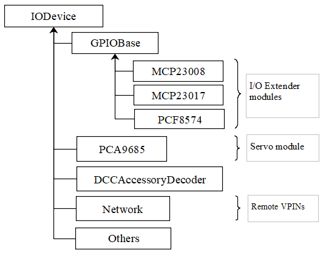

DCC++EX HAL Architecture¶
Introduction¶
Firstly, an apology. The document below is mostly based on my activity log while developing the HAL software and other associated modules (I2C etc.). Consequently, it is badly structured, random, and mostly extremely technical. For that, I apologise.
Now, on to the content. You have been warned…
Overview¶
HAL = Hardware Abstraction Layer.
The HAL provides the ability for any output device that can be controlled by a binary command (on/off, position1/position2, set/reset etc.), or any input that provides a binary signal (on/off, active/inactive, above/below threshold, etc.), to be controlled from DCC++EX code through a standardised application programming interface (API) defined in class IODevice, irrespective of the type of hardware, the electrical connection or the control protocol that is used.
The external device may be connected directly to an Arduino pin, a pin on an I2C-connected extender module, a DCC Accessory controller, or another microcontroller connected via a serial or wireless connection. The HAL allows any of these options to be used without any changes to the Command Station software, just a couple of lines of text added to the user’s configuration file before building the software. One line is a #include directive to include the device definition, and the second line associates the device type, and its handler software, with an I/O pin number or range of numbers. However, rather than being a specific Arduino I/O pin, this pin number is termed as a ‘virtual pin’ or vpin and is a reference to any kind of ‘end-point’ connected to a local or remote device.
When CS changes a turnout or output, the CS code issues calls in the form IODevice::write(vpin,value). The vpin is used to route the call to the correct device handler, and the device handler sends a command to the device being controlled to carry out an action; for example, a digital output is switched to illuminate an LED, or a servo moves the railway track points from one position to another.
The class hierarchy is shown below.
{kind=link}
IODevice defines the overall base class interface, which is implemented in each HAL device driver class. The class GPIOBase implements functionality that is common to, and inherited by, the drivers for GPIO input/output modules (MCP23017, MCP23008 and PCF8574). Consequently, the drivers for those modules are relatively simple and just include the device-specific commands for reading and writing to the module’s registers.
Command Reference¶
Revised Turnout Command List¶
- <T id SERVO vpin activePos inactivePos profile>
Define turnout servo (PWM) on specified vpin. The active and inactive positions are defined in terms of the PWM parameter (0-4095 corresponds to 0-100% PWM). The limits for an SG90 servo are about 102 to 490. The standard range of 1ms to 2ms pulses correspond to values 205 to 409. Profile defines the speed and style of movement: 0=Instant, 1=Fast (0.5 sec), 2=Medium (1 sec), 3=Slow (2 sec) and 4=Bounce (subject to revision). Note: Servos are not supported on the minimal HAL (Uno or Nano target).
- <T id VPIN vpin>
Define turnout output on specified vpin. This may be used for controlling Arduino digital output pins or pins on an I/O Extender.
- <T id DCC addr subaddr>
Define turnout on a DCC Accessory Decoder with the specified address and subaddress.
- <T id DCC linearAddr>
Define turnout on a DCC Accessory Decoder with the specified linear address.
- <T id addr subaddr>
Legacy command format for defining a turnout on a DCC Accessory Decoder with the specified address and subaddress.
- <T id vpin activePos inactivePos>
Legacy command format for defining a turnout servo on specified vpin. The positions are the same as for the turnout servo command above. Note: Servos are not supported on the minimal HAL (Uno or Nano target).
- <T id 1> or <T id T>
Throw turnout / energise output
- <T id 0> or <T id C>
Close turnout / de-energise output
- <T>
List Turnout configurations and states
- <T id>
Delete nominated turnout
HAL Programming Interface¶
The interface functions to the HAL are as follows. Apart from the ‘create’ functions, these functions are generally only called internally from within the DCC++ EX software. The xxxx::create() functions however are required to be added to the user’s mySetup.cpp or mySetup.h configuration file in order to register the device driver and configure the specified VPINs.
- MCP23017::create(firstVpin, 16, 0x20); — OR — MCP23017 device1(firstVpin, 16, 0x20);
Create an instance of a HAL I/O driver for an MCP23017 GPIO Extender with 16 inputs/outputs (numbered from firstVpin to firstVpin+15), on I2C address 0x20. The device input pins will be polled at a target rate of once every 4 milliseconds. The first syntax calls a function, so should be placed in executable code context (in a function). The second syntax is a declaration and should NOT be in a function.
- MCP23017::create(firstVpin, 16, 0x20, 40); — OR — MCP23017 device1(firstVpin, 16, 0x20, 40);
As above, but using the MCP23017’s interrupt pins (INTA/INTB) connected to Arduino GPIO pin 40 via a jumper wire. The device will only be polled when the MCP23017 pulls INTA or INTB (and hence pin 40) to ground to signify that a change has occurred. A single Arduino pin may be shared by multiple modules by commoning together the INT* pins from each module.
- PCF8574::create(firstVpin, 8, 0x23); — OR — PCF8574 device1(firstVpin, 8, 0x23);
Create an instance of a HAL I/O driver for an PCF8574 GPIO Extender with 8 inputs/outputs, on I2C address 0x23. [An interrupt pin may be specified as for MCP23017.]
- MCP23008::create(firstVpin, 8, 0x21); — OR — MCP23008 device1(firstVpin, 8, 0x21);
Create an instance of a HAL I/O driver for an MCP23008 GPIO Extender with 8 inputs/outputs (numbered from firstVpin to firstVpin+7), on I2C address 0x21. [An interrupt pin may be specified as for MCP23017.]
- PCA9685::create(firstVpin, 16, 0x40); — OR — PCA9685 device1(firstVpin, 16, 0x40);
Create an instance of a PCA9685 servo interface module driver with 16 outputs (numbered from firstVpin to firstVpin+15), on I2C address 0x40.
- DCCAccessoryDecoder::create(firstVpin, 4, addr, subaddr); — OR — DCCAccessoryDecoder device1(firstVpin, 4, addr, subaddr);
Create a range of four DCC Accessory Decoder pins from firstVpin to firstVpin+3, starting at the specified decoder address/subaddress. The addresses are treated as a linear address space, so multiple decoders on contiguous addresses may be configured by one statement.
The remainder of the functions below are intended for use within the DCC++ EX software only, and are not usually required by users.
- IODevice::write(vpin, 1); IODevice::write(vpin, 0);
Set/reset the state of a digital pin (local Arduino, remote GPIO extender, servo, DCC Accessor Decoder, or other output device). The vpin will be implicitly switched into output mode by this call. If the device in question does not support the write operation, the call will be ignored.
- IODevice::writeAnalogue(vpin, value, param2, param3);
Write value to a pin capable of analogue operations (e.g. a servo attached to a PCA9685 module). This function does not require the pin to have been previously configured by the IODevice::configure() function.
[For the PCA9685, value is the position, between 0 and 4095 and represents the PWM ratio, with 0 being fully off and 4095 being fully on; param2 is profile, which defines how the servo moves, and may be 0 (Instant), 1 (Fast), 2 (Medium), 3 (Slow) or 4 (Bounce). If param2 is zero, then param3 is the time that the animation is to take in 20ths of a second (default 0). If the top bit of param2 is set (e.g. param2=0x80 + 1) then the PWM output will be maintained after the desired position is reached. This is useful if the device is controlling an LED, since otherwise the LED will be turned off at the end.]
[For the DFPlayer MP3 player device, value is the number of the sound file to be played; and param2 is the volume.] If the device in question does not support the writeAnalogue operation, the call will be ignored.
- int state = IODevice::read(vpin);
Read the current state of an input pin (local Arduino or remote GPIO extender, or other input device). The vpin will be implicitly switched into input mode by this call. For digital inputs, the return value is true (1) for 0V (active) and false (0) for +5V (inactive), accounting for the pull-up. If the device in question does not support the read operation, the value returned will be zero.
- int value = IODevice::readAnalogue(vpin);
Read the current value of an analogue input pin (local Arduino or remote ADS111x ADC module, or other input device). The vpin will be implicitly switched into input mode by this call. If the device in question does not support the readAnalogue operation, the value returned will be zero.
- bool ok = IODevice::configureInput(1, pullup);
Configure a digital input pin for pullup or no pullup (default is that pullups are enabled). If the device in question does not support the configureInput operation, the value returned will be false.
- bool ok = IODevice::configureServo(activePosition, inactivePosition, profile[, initialState]);
Configure a PWM (servo) output (required). Profile may be 0 (immediate), 1 (fast), 2 (medium), 3 (slow) or 4 (bounce). [activePosition and inactivePosition are between 0 and 4095 and represent the PWM ratio, with 0 being fully off and 4095 being fully on. Thus, the PWM signal may be used to drive servos, LEDs or other devices.] If the device in question does not support the configureServo operation, the value returned will be false.
- IODevice::loop();
Invoke the regular operations of the HAL, e.g. updating servo positions, regular polling of inputs, etc. [This is called from the loop() function in CommandStation-EX.ino.]
HAL #define Symbols¶
The following #define symbols may be defined in the IODevice.h file or the platformio.ini file in order to facilitate fault-finding or to remove the HAL from the build.
- DIAG_IO
Enable supplementary diagnostic output from the HAL classes
- DIAG_LOOPTIMES
Enable calculation and display of average and maximum loop times for the CS’s overall main ‘loop’ function. When enabled, the diagnostic is updated every 5 seconds and is sent to the diagnostic output (USB Serial) and to the LCD line 1 (overwriting the ‘Ready’ message).
- IO_NO_HAL
Removes the bulk of the HAL code. The only parts that remain are those that are required to interface to the Arduino’s input and output pins. This symbol is automatically defined if the code is being compiled for an Arduino Uno or Arduino Nano target, to reduce the memory footprint. In this mode, inputs pullups are enabled and inputs are inverted (i.e. 5V=inactive and 0V=active).
- IO_SWITCH_OFF_SERVO
When a transition between states has completed on a PCA9685 (e.g. a servo movement), the servo motor will be switched off, by disabling the pulses on the pin. This reduces power consumption and potential noise (servo buzz) when the servo isn’t moving.
The following symbols may be defined in I2CManager.h or the platformio.ini file to adjust the behaviour of the I2C subsystem.
- I2C_USE_WIRE
Direct the I2C Manager to use the ‘Wire’ library instead of the native AVR and 4809 drivers. For platforms other than the AVR and 4809, the ‘Wire’ library will be used irrespective of this symbol. The ‘Wire’ library is a blocking driver, i.e. the CS cannot run any useful code while I2C messages are being sent and received. The native drivers are non-blocking and are able to perform I2C operations in parallel with other CS code.
- I2C_USE_INTERRUPTS
Configure the I2C Manager’s non-blocking AVR and 4809 drivers to use interrupts to signal completion of an I2C operation (default unless I2C_NO_INTERRUPTS is defined).
- I2C_NO_INTERRUPTS
Don’t use interrupts to signal completion of an I2C operation. The I2C state is instead checked whenever the following functions are called:
I2CManager::loop(); I2CRB::wait(); I2CRB::isBusy();
This option will reduce the amount of time spent in interrupt code, but not completely eliminate it (since interrupts are also used by the serial USB, clock and other components). It will also slow down the I2C throughput as there will be increased latency between consecutive bytes sent and received.
mySetup Files¶
There are various ways of configuring I/O and creating turnouts, sensors and other objects when the CS is powered on:
After using the commands (<S …>, <T …>, <Z …> etc) to define sensors, turnouts and outputs, use the <E> command to save them to EEPROM. Then, when the CS restarts, the definitions are read back from EEPROM and the objects recreated. This is limited to turnout, sensor and output definitions.
Create a ‘mySetup.h’ file, and add commands in the form SETUP("....");. This can be used for any command that is accepted
by the DCC++EX parser, including turnout, sensor and output definition commands. The mySetup.h file is included as
executable code into other modules of the CS. Consequently, the content is limited to executable statements (or macros
that expand into executable statements). Global variables or functions cannot be defined, and only very simple include
files can be added. Consequently, only a limited number of the DCC++EX api function can be used from here.
Create a ‘mySetup.cpp’ file and add a function definition void mySetup(){ };. Within this function you can add
any executable code. Outside the function, you can declare variables and add include files to allow other functions to be invoked. For example:
#include "IODevice.h" #include "Turnouts.h" void mySetup() { // Servo controller on I2C addr 0x41 PCA9685::create(300, 16, 0x41); // Define servo on first pin ServoTurnout::create(10, 300, 420 210, 0); }
The create() function allocates memory for the device at run-time. As an alternative to the create() function, the
device can be declared statically so that the compiler allocates the basic RAM required for it at compile-time.
#include "IODevice.h" #include "Turnouts.h" // Servo controller on I2C addr 0x41 PCA9685 pwmModule1(300, 16, 0x41); void mySetup() { // Define servo on first pin ServoTurnout::create(10, 300, 420 210, 0); }
Because the mySetup.cpp module is a self-contained C++ module, autocomplete and visual syntax checking will be fully functional in editors that support it (e.g. PlatformIO).
List of Changes¶
The following functional changes have been done in the neil-hal branch to support the implementation of the HAL in DCC++EX, and to improve the handling of Displays, Turnouts, Sensors and Outputs.
HAL: Create new IODevice class as the abstract base class for all I/O devices such as GPIO Extenders, remote I/O, DCC Accessories and (for completeness) Arduino I/O pins. The base class/subclass model allows the CS code to communicate directly with the base class, without having to be tailored for functionality implemented in specific subclasses. Specific implemenations of the interface, to support different hardware devices, can be easily ‘plugged in’ as desired at compile time, by adding an include file (
#include "xxx.h") and one line to the user’s ‘mySetup’ file (xxx::create(firstVpin, nPins, ...);) before building the software. This enables a wide selection of hardware to be supported, without unwanted or unused device drivers taking valuable space in the microcontroller. Also, support for new devices can be developed by capable end-users, and included in the user’s build without having to change the base CS software.HAL: The default initialisation of the HAL supports use of the Arduino pins on all platforms. On the Nano and Uno platforms, the HAL is excluded (by defining IO_NO_HAL) and input and output to vpins corresponding to Arduino pins operate directly on the Arduino pins using pinMode, digitalWrite and digitalRead calls or equivalents. On other platforms, a selection of Vpins are enabled for use of certain drivers. The current build has the following directives in the IODevice::begin() method:
// Initialise the IO subsystem ArduinoPins::create(2, NUM_DIGITAL_PINS-2); // Reserve pins for direct access // Predefine two PCA9685 modules 0x40-0x41 // Allocates 32 pins 100-131 PCA9685::create(100, 16, 0x40); PCA9685::create(116, 16, 0x41); // Predefine two MCP23017 module 0x20/0x21 // Allocates 32 pins 164-195 MCP23017::create(164, 16, 0x20); MCP23017::create(180, 16, 0x21);
HAL: Add looptime monitor to IODevice::loop() function to support performance monitoring during development. Outputs to LCD line 1 and to USB, once every 5 seconds, and shows average and maximum loop cycle time for the entire CS software over the last 5 second period. This monitor may be enabled by #defining the symbol DIAG_LOOPTIMES in IODevice.h. Other HAL diagnostics are enabled by DIAG_IO symbol.
HAL: Create IODevice subclasses for Arduino Pins, PCA9685 Servo Controller module, PCF8574 8-bit GPIO Extender, MCP23008 8-bit GPIO Extender and MCP23017 16-bit GPIO Extender modules.
HAL: Create helper class for PCA9685 to support configurable transitions between PWM states, e.g. a fast or slow progressive movement of a servo between the inactive position and the active position (rather than a step change). Also, the helper powers off the servo when not moving, to reduce power consumption and to eliminate servo buzz. [Note: Helper class code has subsequently been incorporated within the PCA9685 class.]
Sensors/Turnouts/Outputs: Revise Sensor, Turnout and Output classes to interface them to the IODevice interface using virtual I/O pins (VPINs).
Displays: Rationalise SSD1306 OLED driver to reduce RAM and FLASH usage, and to consolidate the code into two source files (.SSD1306Ascii.h and SSD1306Ascii.cpp).
Displays: Rationalise LiquidCrystal_I2C driver to remove unnecessary code.
I2C: During I2CManager startup, detect and list I2C devices that are connected and responding.
Sensors/Turnouts/Outputs: Revise memory layout for Sensor, Output and Turnout classes to optimise EEPROM usage and RAM usage.
Displays: Make SSD1306Ascii and LiquidCrystal_I2C into subclasses of LcdDisplay.
Displays: Enable upper-case only mode for SSD1306Ascii, optionally reducing FLASH usage for font storage.
Sensors/Turnouts/Outputs: Revise Turnout command handling to support new commands, e.g.
<T id SERVO vpin activeposition inactiveposition profile> <T id DCC address subaddress> // address 1-512, subaddress 0-3 <T id DCC linearaddress> // linearaddress 1-2048 <T id VPIN pin>
Sensors/Turnouts/Outputs: Move detailed turnout command handling from DCCEXParser.cpp to Turnouts.cpp and PCA9685, closer to where the functionality is implemented. Therefore, the code for handling a servo is only included in FLASH if the servo driver module is configured.
Sensors/Turnouts/Outputs: Modify turnout handling to more effectively store the turnout parameters in the available space. Allows range of up to 0-511 for activeposition and inactiveposition (nominal range for a typical servo is 200-400).
HAL: For GPIO devices (MCP23008 and MCP23017) allow the ‘interrupt’ output pin from the module to be connected to an Arduino digital input pin so that the module will only be polled if this ‘interrupt’ signal is activated (pulled down) by the module to signify that one or more of the module’s inputs have changed state. The interrupt signal from multiple modules can be connected together to minimise pin usage, or they may be kept separate.
HAL: Enable pull-ups to be configured on remote (I/O extender) digital inputs as for Arduino pins. This feature may be removed, as feedback received indicates that there is no benefit in switching pull-ups off, and some FLASH and RAM can be released by removing the code.
Displays: Make display scroll mode 1 the default (scroll by page). If there are more messages than the screen can hold, then the screen alternates between displaying the first four lines, and displaying the remaining lines. Previous behaviour (cycle through the messsages, always displaying four lines) can be reinstated by adding “#define SCROLLMODE 0” in the config.h file.
Sensors/Turnouts/Outputs: Improve EEPROM handling so that when EEPROM writes are turned off, they stay off. When turnout state changes, only write one byte to EEPROM instead of rewriting the entire EEPROM.
HAL: Adjust the existing LCN handling to fit alongside the use of VPINs:
Replace use of pin 255 for ‘impossible pin’ with constant VPIN_NONE, since 255 is a valid value for a VPIN.
When an LCN message is received put the value into the inputState field of a sensor, instead of the active field (to facilitate notification of change to JMRI).
Sensors/Turnouts/Outputs: Ensure that servo turnouts and outputs are driven to the correct position (as configured, or as last saved in EEPROM) when the CS is powered on or reset.
I2C: Revise I2CManager class to add the following features:
Add non-blocking I2C interface, using a request block structure to maintain the call context and completion status. Request block is queued without the caller having to wait for completion. The caller can later test for completion, or wait for completion. Supported operations are Write from RAM, Write from FLASH, Read. and Request (write followed by read). The benefit of non-blocking calls is that the CS doesn’t spend so much of its time waiting for I2C operations to complete; the CS overall loop cycle time is reduced, making all the code more responsive. The queue is implemented as a linked list of request blocks, to optimise RAM use.
For convenience, provide blocking API equivalents for these operations for use where timing is less critical (e.g. during startup).
Implementation of native I2C drivers for the ATmega328 (Arduino Nano and Uno), ATmega2560 (Arduino Mega) and the ATmega4809 (Arduino Nano Every and Uno WiFi). This removes the dependency on the ‘Wire’ I2C library, reducing RAM and FLASH usage significantly.
Retain and enhance the existing Wire-based back-end for the I2CManager interface, providing compatibility with non-Atmel platforms. With the Wire library, all calls are blocking (i.e. when the request is made, the calling code does not continue until the I2C operation has completed).
The native I2C driver for the ATmega328, ATmega2560 and ATmega4809 based controllers supports use with interrupts (for high I2C throughput) or without interrupts (to minimise impact on the DCC waveform, when generated through software interrupts, at the expense of I2C throughput). On the Arduino Mega with the standard motor driver pin usage, the native I2C driver has no impact whatsoever on the DCC signal, with or without interrupts.
Performance figures: With the current base device allocations of 32 x PCA9685 servo pins and 32 x MCP23017 GPIO pins, the average loop time for the CS software (one throttle, no user actions, 16 sensors defined) is 120us. During stress testing, a full I2C scan of 8 x 32-input I2C GPIO extenders (128 inputs in total) takes under 2.2 ms at an I2C clock speed of 400kHz.
I2C: Revise modules that use I2C (currently SSD1306Ascii, LiquidCrystal_I2C, PCF8574, PCA9584, MCP23016 and MCP23008) to call the non-blocking I2C interface using the following model:
During initialisation, use the original (blocking) I2CManager interface to set up the I2C device registers as required. Set up request block structures with parameters for the desired operations (which could be a data write to an output port, or a data read from an input port on the I2C device, for example).
On first cyclic entry, the request block is added to the I2CManager queue. Once it has been added to the queue, the program does not have to wait for completion and can allow other functions to continue executing. The requested operation will begin once any other pending operations have finished.
On subsequent entries to the program’s loop function, the program tests the completion status of the request block. If it is still busy, then other loop functions may be allowed to run.
When the operation completes, the status of the request block is updated to show it is no longer busy.
At the next loop entry of the program, the test for competion status shows that the request block is no longer busy. The program may then retrieve the success/failure status, and any data that has been received, for further processing.
When necessary, the operation may be repeated by requeueing the original request block (either unchanged or with different parameters or data).
If the non-blocking I2C driver is not available (e.g. on controllers other than ATmega328, ATmega2560 and ATmega4809), the blocking I2C functions in the Wire library are automatically used instead, without any changes to the CS code.
Turnouts: Totally revised Turnout class and TurnoutData struct layout for more optimal storage and layout. The struct is now optimised for access and for storage size. Further optimisation is possible by writing (and reading) only the number of bytes applicable to each turnout type, instead of the worst case turnout size.
HAL: IODevice::configure method originally passed supplied parameters to the specified pin handler without any way of checking that parameters are appropriate for the device (e.g. that a servo hasn’t been instructed to turn on an input pull-up). Additional parameter has been added which identifies the function being performed, e.g. 1=Servo config, 2=Pullup on/off etc. Thus, the device’s _configure method validates that the requested configuration function is supported, or rejects it.
HAL: Normally the Sensor class issues cyclic read request using IODevice::read() to poll digital input states for the current value and to detect changes. To potentially increase performance and response times where there are a lot of inputs to scan, but infrequent changes, a mechanism for optional callback notification has been added to the HAL IODevice class. Each input device driver may implement this capability or not, according to the programmer’s preference. If the callback capability is implemented, then the Sensor class no longer needs to poll the device but, instead, registers a callback function which is invoked whenever the device driver detects a pin state change while acquiring the input data. The GPIOBase class has been modified to implement this behaviour, which is inherited by MCP23017, MCP23008 and PCF8574. [Note: Callback notification of input change has now been implemented in the revised GPIO device class hierarchy.]
HAL: Add conditional compilation directives for IO_NO_HAL. If defined, this implements a reduced version of the HAL which supports Arduino I/O pins only, and excludes code from Turnouts.cpp and Sensors.cpp which relate to features that require HAL drivers to be present, such as drivers for external I/O modules, including servos. This reduces the memory footprint on the Nano and Uno of the neil-hal branch to 27,724 bytes, 560 bytes less than the current master branch (28,284 at 10th May 2021). The symbol IO_NO_HAL is automatically defined for the Uno and Nano, but not for other architectures which are less limited by FLASH size.
HAL: Add hook for optional mySetup.cpp file. The existing mySetup.h hook provides a place for system-specific initialisation that is to be permamently built into the CS, but is limited to specific directives and commands (e.g. SETUP(“S 1 28 1”); to define a sensor). For example, library #includes cannot be added to enable optional features. The mySetup.cpp, however is expected to be a syntactically complete C++ module which may include #includes directives, and should have a definition of a function mySetup(). When included in the build, the mySetup() function will be called during the startup of the CS, before the directives in mySetup.h are executed. This provides a simple yet flexible way of including optional features into the build, such as support for specific IO Extender modules, or optional advanced features as an alternative to conditional compilation or other changes to the CS code. If it is required that the configuration, build and upload be automated, the mySetup.cpp file can be generated by a tool before invoking the build and upload.
HAL: Small servos such as the ubiquitous SG90, according to the datasheet, expect a pulse length of 1.0-2.0ms at 50Hz to operate over their full range, translating to PWM settings between 205 and 410. Other servos might operate over a range of 0.5ms to 2.4ms (PWM settings 102 to 490).
HAL: PCA9685 servo module driver now has a default mode. If not configured, then no memory is allocated for parameters and dynamic state for individual pins. Originally a write to a non-configured pin would be ignored. Now, instead, default servo limits will be assumed: a write of value ‘1’ will request 2ms servo pulses (position 410), and a write value ‘0’ will request 1ms servo pulses (position 205). This will typically cause a movement of about 90 degrees by the servo.
HAL: New IODevice::writeAnalogue(vpin, value, profile) added to support EXRAIL. This function is initially implemented only for the PCA9685 driver. It allows a servo to be repositioned to any arbitrary position (value parameter) using the specified profile. The function does not require the pin to have been previously configured. However, if not already configured, the pin will be implicitly configured to use the specified profile, and default active/inactive positions of 410 and 205 (as above).
HAL: New function IODevice::isActive(vpin) added to support EXRAIL. This returns true while an animation is executing (e.g. turnout is in motion), and false otherwise.
Turnouts: Allow DCC Accessory turnouts to be swapped in polarity. Classic DCC++ has the <T id 1> command throwing the turnout and <T id 0> closing it. This is translated in classic DCC++ to a packet with D=1 for Throw and D=0 for Close. RCN-213 standard specifies that the packet should contain D=1 for Close and D=0 for Throw, i.e. the opposite of DCC++. Consequently an option is added to allow classic behaviour within the packet generation, or RCN-213 compliant behaviour by editing the Config.h file. The command format of <T id 1> meaning ‘Throw’ has been retained to avoid confusion.
HAL: New device support for HC-SR04 Ultrasonic Distance Sensor. This device senses distance of nearby objects by sending an ultrasound pulse and listening for the echo. From the delay time, the distance can be calculated. The device is configured in mySetup.cpp by
#include "IO_HCSR04.h" void mySetup() { ... HCSR04::create(vpin, triggerPin, echoPin, onThreshold, offThreshold); ... }
where triggerPin and echoPin are the Arduino pins connected to the corresponding pins on the sensor, and onThreshold and offThreshold are the distances (in centimetres) at which the vpin is to be set to 1 or 0 respectively (onThreshold < offThreshold).
HAL: New function IODevice::readAnalogue(vpin) added to support analogue inputs on the arduino pins and on external I2C analogue input modules. Driver for ADS1113 and ADS1114 (both single input) and ADS1115 (4-input) added as class ADS111x. The device is configured in mySetup.cpp by
#include "IO_AnalogueInputs.h" void mySetup() { ... ADS111x::create(firstVpin, nPins, i2cAddress); ... }
Future Enhancements¶
HAL: Produce a simple IODevice class template, to help DCC++EX developers/tinkerers who want to implement their own extensions protocols, e.g. for a serial link to an external device (LCN?). See IO_ExampleSerial.cpp.
_begin Initialise serial line. _loop State machine to read incoming characters and decode rudimentary data messsages. _read Return current state from received data messages. _write Send simple messages over serial line
HAL: Remove the ability to switch off pull-ups for inputs? Initially the IODevice class was implemented with pullups switched permanently on for input pins. On the PCF8574 they have to be on anyway, because of the way the chip works. So I added them, but @UKBloke asked why anyone wouldn’t want pullups enabled? Most, if not all, sensors operate by pulling a pin down to earth. Look at pushbuttons, microswitches, relays, hall effect sensors, and others. So supplying a pullup, and inverting (0V=active=true, 5V=inactive=false), would seem to be the standard. Pull-up+inversion is now default if not configured otherwise.
I2C: The overall capacitance of an I2C bus is limited in the specification to 400pF. Above this, the slew rate of the clock and data signals is too slow to achieve the expected performance. Capacitance increases with bus length, and increases as devices are added to the bus. Also, the I2C address choice for most devices is limited and using the same I2C address for two devices causes a conflict. PROPOSAL: A bus multiplexer provides the capability to switch, under I2C control, one or more separate bus segments to be connected to the bus controller. When a bus segment is not connected, its devices will not respond, and the capacitance of the bus segment does not contribute to the overall I2C bus capacitance. Suppport for a bus multiplexer could readily be added in the I2CManager, by extending the I2C address field for each device to 16 bits (instead of 8 bits). The low bits would contain the I2C address of the destination device. The high bits would contain a selecter for the multiplexer (1-8, as up to 8 multiplexers may be present), and a sub-bus number (0-7) to be selected on the multipexer. A value of zero for the multiplexer and sub-bus number would indicate that the device in question is connected to the primary bus and is not affected by the state of the multiplexer. The impact on I2C traffic is minimal; two additional bytes need to be sent if an I2C request requires to switch to a different sub-bus and the affect on the code is just the changes above to the I2C handling.
Sensors/Turnouts/Outputs: I can’t see anything in the existing code which checks whether the EEPROM writes overrun the available EEPROM space. If not, then when the address overflows, I think that the writes will wrap around and overwrite the start of the EEPROM space. This is, in fact, safe since the beginning of the EEPROM contains a text flag and, if it s not present or has been overwritten, the EEPROM is considered to be empty. PROPOSAL: Analyse more thoroughly and, if the address overrun check is missing, add suitable checks, and report failure (<X>) if there is insufficient EEPROM to store everything. I’ve added a DIAG report of how much EEPROM is written when <E> command is executed.
Sensors: Sensor handling is not ideal. When the Sensor class scans for changes in current state by calling IODevice::read(), potentially each device (ArduinoPins, MCP23017 etc) needs to be checked to find the correct device, which takes time. For a system with, say, three I2C devices, this means up to four devices being checked for each pin being read. This can be mitigated by using the callback capability, but this also has its problems. When a change is detected and the callback is invoked, the relevant sensor object has to be located by scanning the sensor list, potentially to the end. For the same three I2C devices each with 16 sensors, that’s up to 48 sensor objects that need to be checked to find the appropriate sensor object, but this isn’t as bad as it sounds as it only happens on a sensor state change. Also, the transmission of the <Q>/<q> message is deferred to the checkAll() method which also has to scan through all of the sensor objects, partly because of the anti-bounce delay handling and partly because the output stream is only available within the checkAll function. I can’t really see how this can be improved without serious restructuring of other parts of the CS. PROPOSAL: The anti-bounce code in the Sensor class could be removed in favour of adding simple double-scan validation within the HAL drivers (input must be the same for two consecutive scans to be considered a valid change). This would use minimal RAM in external GPIO module drivers (one extra byte per 8 input pins) but would need more changes for Arduino pins, which are currently scanned on demand.
HAL, Sensors/Turnouts: Each HAL device and pin, each turnout, and each sensor requires some RAM to hold its configuration parameters and its current state. While the configuration parameters associated with dynamically created objects (e.g. turnouts through the <T> command) must be held in RAM, it is theoretically possible to provide an alternative way of creating these objects where the configuration parameters are held only in FLASH, thereby reducing the RAM requirements. This would be relatively straightforward if all objects were to be statically created, but the need to support both dynamically create objects and statically created objects would complicate the code signficantly. To be explored.
HAL, Turnouts: EEPROM is currently optionally used for storing definitions of Turnouts, Sensors and Outputs. In addition, if a turnout or output definition has been saved to EEPROM then the state of the turnout (closed/thrown) or output will be updated in EEPROM each time it is changed. This allows the turnout/output to be reinitialised to its last known state on each restart of the CS. However, if the EEPROM is not used for definitions, then the states are not available either. PROPOSAL: If the EEPROM isn’t used for object definitions, then store current states of objects instead. This could be done fairly readily for turnouts, using existing code, by writing just the TurnoutData contents to EEPROM - this contains the turnout ID, type and current position (closed/thrown). Thus, when a turnout is recreated (from a <T> command in the myConfig.h, or otherwise) the last known state for that turnout ID can be retrieved by searching the EEPROM for a turnout with a matching ID. When a turnout is deleted, the slot it occupied in EEPROM would be marked free (e.g. with an ID of -1). If a turnout is created and its ID is not found, then the first free space would be allocated to it. When the turnout position changes, the flags byte would be rewritten to EEPROM. Note that this approach only stores the binary closed/thrown state and not, for example, the current position of a servo, which may be any arbitrary value within the servo’s range.
N McKechnie, 27th August 2021